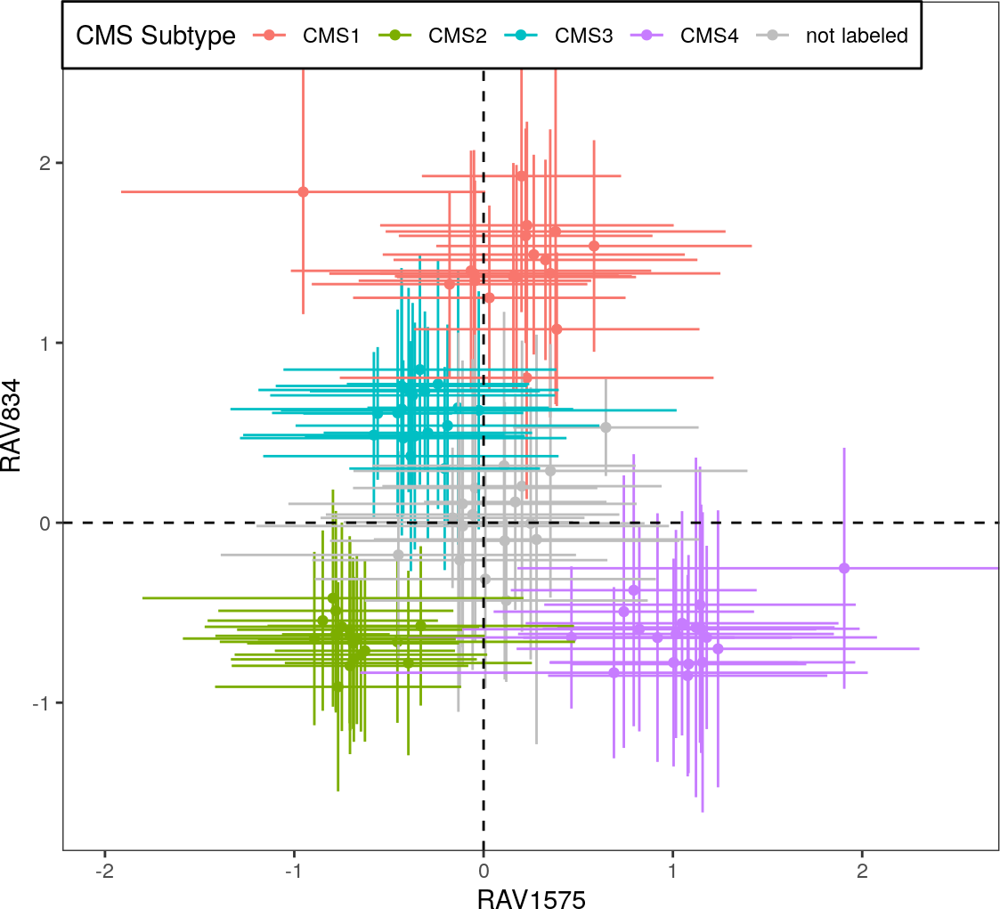
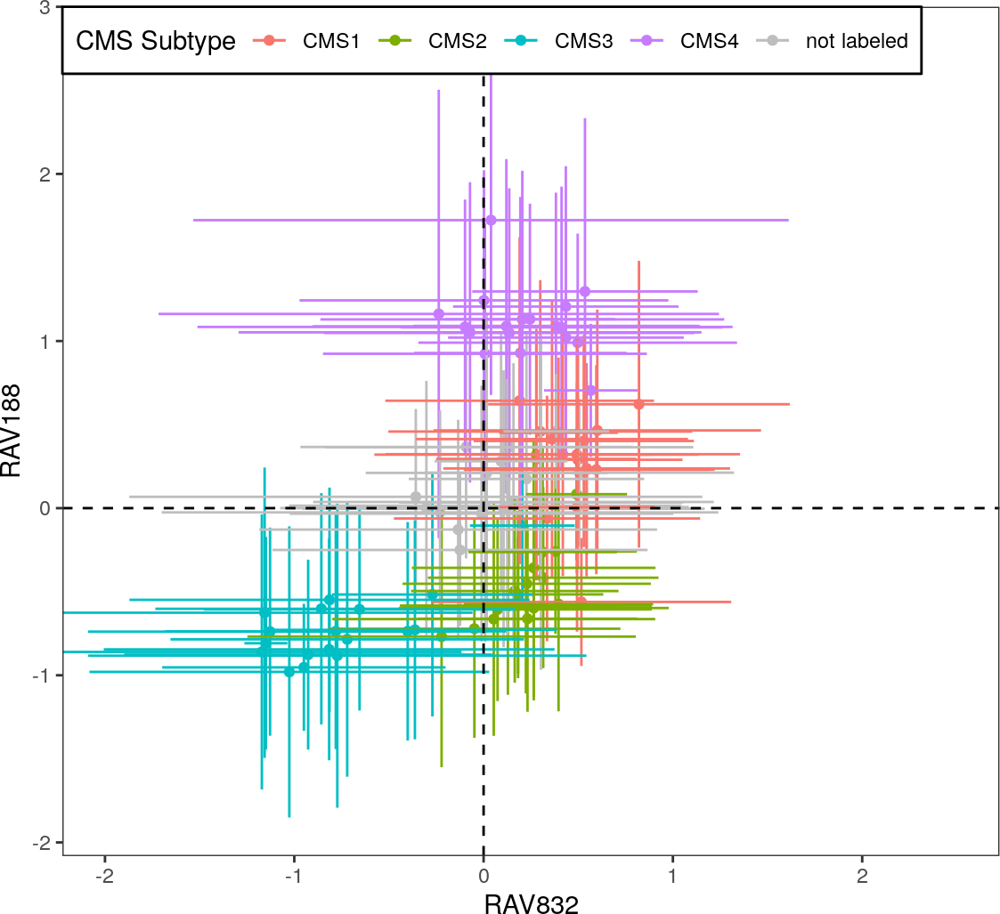
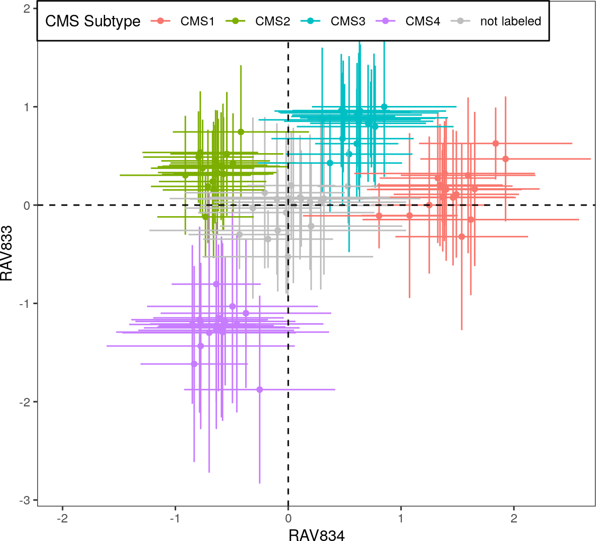
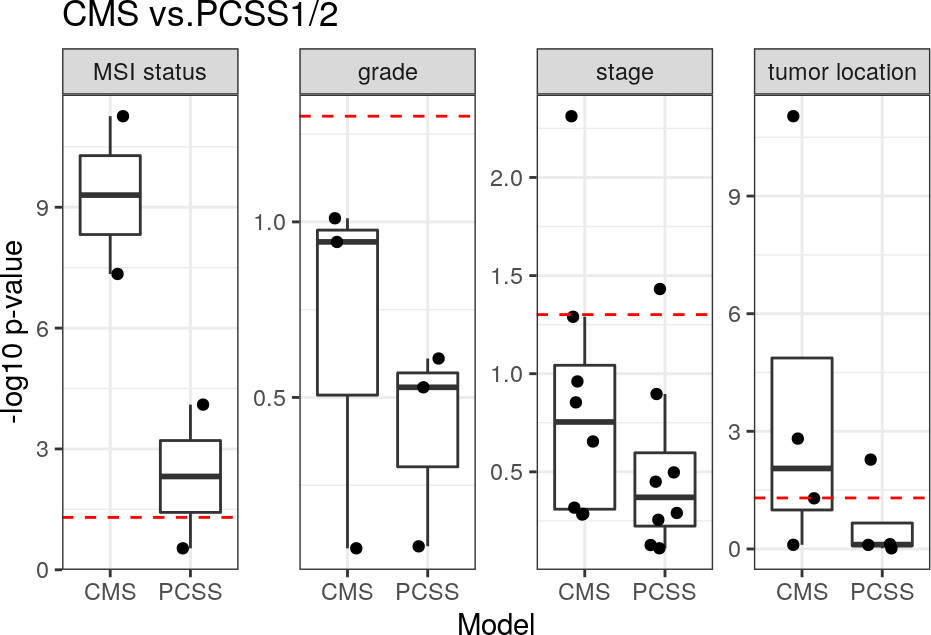
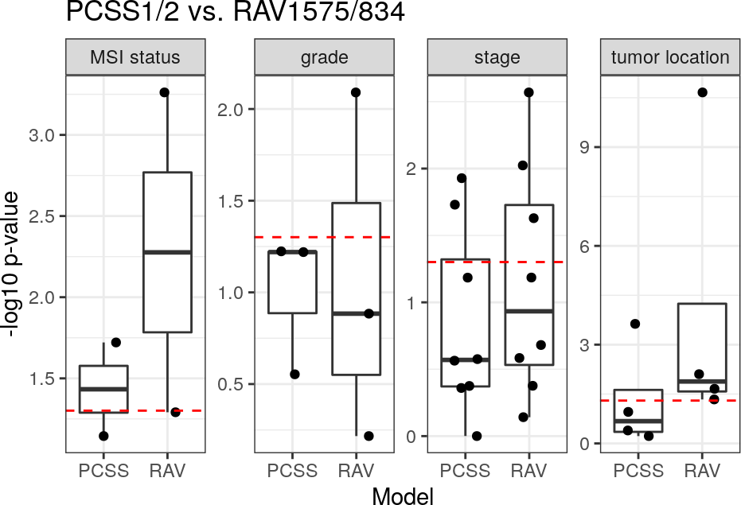
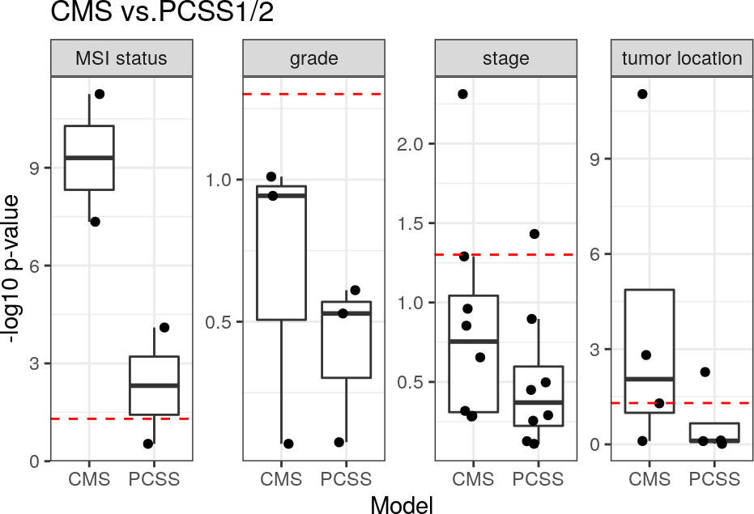
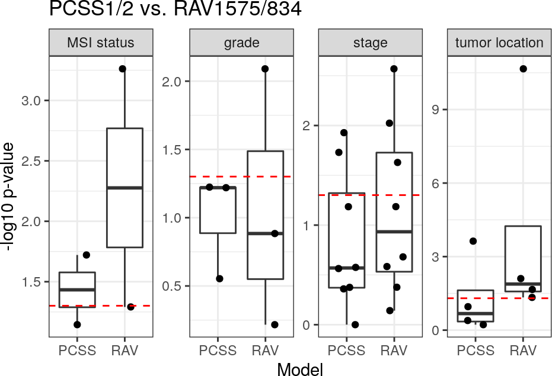

Figures and Tables for GenomicSuperSignature Paper
Sehyun Oh
March 16, 2022
Source:vignettes/manuscript.Rmd
manuscript.RmdBenchmark CRC paper
CRC_top10_validated_ind.tsv
A data frame of top 10 validated indexes from 18 CRC datasets. This table was created in CRC/repeat_Fig4A.Rmd
x <- read.table("CRC/outputs/CRC_top10_validated_ind.tsv")
head(x)
#> validated_RAV_1 validated_RAV_2 validated_RAV_3
#> GSE12225.GPL3676_eset 312 21 468
#> GSE12945_eset 312 981 832
#> GSE13067_eset 188 833 324
#> GSE13294_eset 1575 833 192
#> GSE14095_eset 2 1032 338
#> GSE14333_eset 832 188 834
#> validated_RAV_4 validated_RAV_5 validated_RAV_6
#> GSE12225.GPL3676_eset 684 119 758
#> GSE12945_eset 684 758 119
#> GSE13067_eset 220 192 1575
#> GSE13294_eset 58 188 187
#> GSE14095_eset 1387 725 1726
#> GSE14333_eset 1575 833 220
#> validated_RAV_7 validated_RAV_8 validated_RAV_9
#> GSE12225.GPL3676_eset 504 153 1016
#> GSE12945_eset 468 21 516
#> GSE13067_eset 1166 438 868
#> GSE13294_eset 832 1008 2538
#> GSE14095_eset 188 1843 1575
#> GSE14333_eset 192 61 579
#> validated_RAV_10
#> GSE12225.GPL3676_eset 27
#> GSE12945_eset 504
#> GSE13067_eset 1467
#> GSE13294_eset 1166
#> GSE14095_eset 189
#> GSE14333_eset 595CRC subtyping
Scatter plots showing how different signatures perform with CRC subtyping. These plots were created in CRC/repeat_Fig4A.Rmd
all <- list.files("CRC/outputs")
scatterplots <- all[grep("scatter_.*rds", all)]
for (plot in scatterplots) {
x <- readRDS(file.path("CRC/outputs", plot))
print(x)
}
#> $value
#>
#> $visible
#> [1] FALSE
#>
#> $value
#>
#> $visible
#> [1] FALSE
#>
#> $value
#>
#> $visible
#> [1] FALSE
CRC binary clinical variables
Bar plots comparing different models in differentiating CRC binary clinical variables. These plots were created in CRC/repeat_Fig4C.Rmd
all <- list.files("CRC/outputs")
barplots <- all[grep("boxplot_.*rds", all)]
for (plot in barplots) {
x <- readRDS(file.path("CRC/outputs", plot))
print(x$value)
} 


Benchmark multiPLIER
neutrophil_estimate.rds
Two scatter plots of RAV1551 x Neutrophil count/estimate of SLE-WB dataset. This plot was created in SLE-WB/repeat_Fig3_SLE-WB.Rmd
x <- readRDS("SLE-WB/outputs/neutrophil_estimate.rds")
xnares_neutrophil.rds
A scatter plot of RAV1551 x Neutrophil estimate of NARES dataset. This plot was created in NARES/repeat_Fig3_NARES.Rmd
x <- readRDS("NARES/outputs/nares_neutrophil.rds")
xSession Info
sessionInfo()
#> R version 4.1.2 (2021-11-01)
#> Platform: x86_64-pc-linux-gnu (64-bit)
#> Running under: Ubuntu 20.04.3 LTS
#>
#> Matrix products: default
#> BLAS/LAPACK: /usr/lib/x86_64-linux-gnu/openblas-pthread/libopenblasp-r0.3.8.so
#>
#> locale:
#> [1] LC_CTYPE=en_US.UTF-8 LC_NUMERIC=C
#> [3] LC_TIME=en_US.UTF-8 LC_COLLATE=en_US.UTF-8
#> [5] LC_MONETARY=en_US.UTF-8 LC_MESSAGES=en_US.UTF-8
#> [7] LC_PAPER=en_US.UTF-8 LC_NAME=C
#> [9] LC_ADDRESS=C LC_TELEPHONE=C
#> [11] LC_MEASUREMENT=en_US.UTF-8 LC_IDENTIFICATION=C
#>
#> attached base packages:
#> [1] stats graphics grDevices utils datasets methods base
#>
#> other attached packages:
#> [1] BiocStyle_2.22.0
#>
#> loaded via a namespace (and not attached):
#> [1] highr_0.9 bslib_0.3.1 compiler_4.1.2
#> [4] pillar_1.7.0 BiocManager_1.30.16 jquerylib_0.1.4
#> [7] tools_4.1.2 digest_0.6.29 jsonlite_1.8.0
#> [10] evaluate_0.15 memoise_2.0.1 lifecycle_1.0.1
#> [13] tibble_3.1.6 gtable_0.3.0 pkgconfig_2.0.3
#> [16] rlang_1.0.2 DBI_1.1.2 cli_3.2.0
#> [19] yaml_2.3.5 pkgdown_2.0.2 xfun_0.30
#> [22] fastmap_1.1.0 withr_2.5.0 dplyr_1.0.8
#> [25] stringr_1.4.0 knitr_1.37 generics_0.1.2
#> [28] vctrs_0.3.8 desc_1.4.1 fs_1.5.2
#> [31] sass_0.4.0 systemfonts_1.0.4 tidyselect_1.1.2
#> [34] rprojroot_2.0.2 grid_4.1.2 glue_1.6.2
#> [37] R6_2.5.1 textshaping_0.3.6 fansi_1.0.2
#> [40] rmarkdown_2.13 bookdown_0.25 farver_2.1.0
#> [43] purrr_0.3.4 ggplot2_3.3.5 magrittr_2.0.2
#> [46] scales_1.1.1 htmltools_0.5.2 ellipsis_0.3.2
#> [49] assertthat_0.2.1 colorspace_2.0-3 labeling_0.4.2
#> [52] ragg_1.2.2 utf8_1.2.2 stringi_1.7.6
#> [55] munsell_0.5.0 cachem_1.0.6 crayon_1.5.0